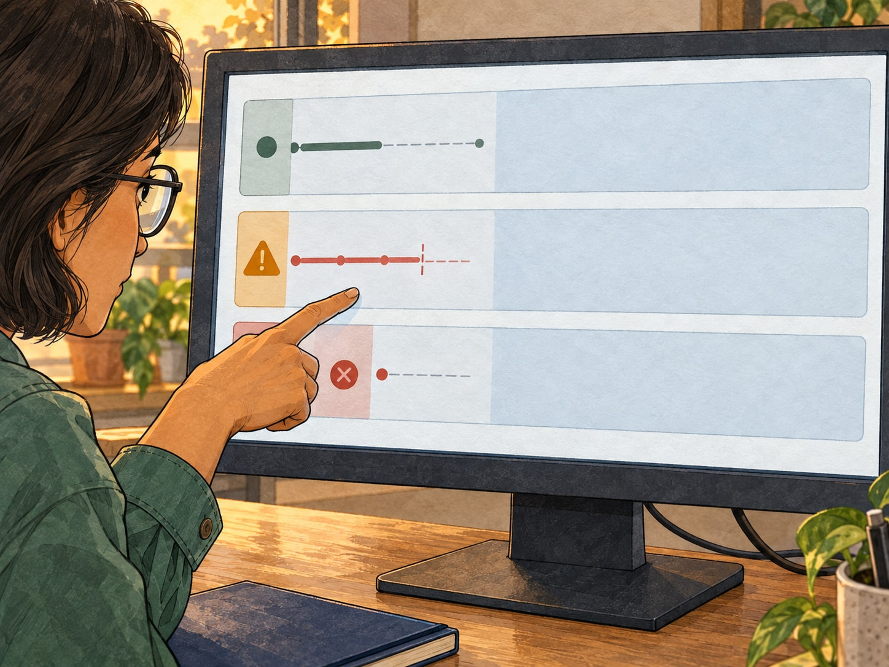

git blame · Chapter 1 · Panel 7 · Artwork proof
One failed request

- r-17 · AcceptedOld target; response pending.
- Old app exitsSIGTERM handler ends the process.
- ALB returns 502The same request loses its reply.
Fictional evidence, assembled from app and load-balancer records. r-17 is a short display alias.